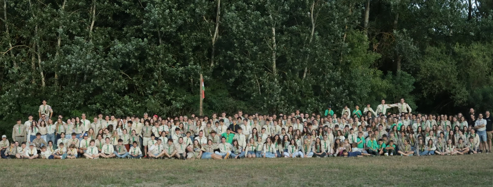
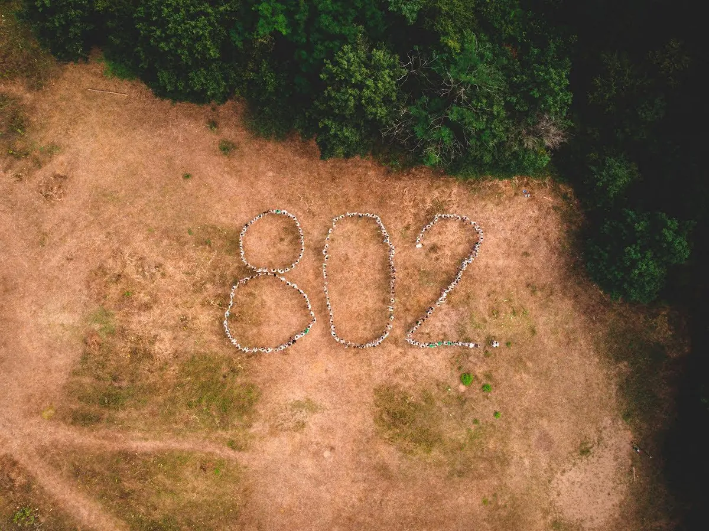
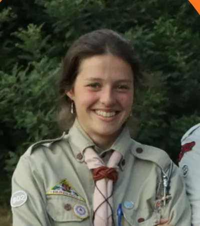
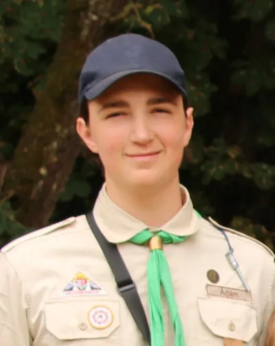
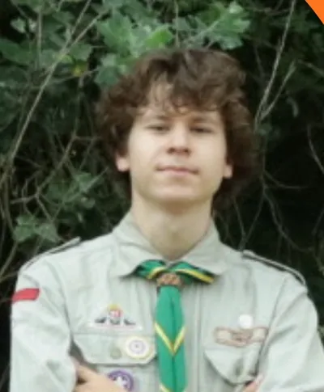

A cserkészet olyan önkéntes ifjúságnevelő mozgalom, melynek célja, hogy segítse olyan életrevaló, felelős és elkötelezett fiatalok nevelését, akiknek fontos, hogy önmaguk folyamatos nevelése által Isten felé növekedjenek.
A 802-ben több mint 400 gödöllői és környékbeli gyerekkel és fiatallal éljük ezt meg nap mint nap: heti őrsgyűléseken, kirándulásokon, portyákon és a nyári táborban. Közel száz éves hagyományt viszünk tovább, de a lényeg ma is ugyanaz: barátság, kaland és egy közösség, amelyre egész életedben számíthatsz.

Csapatparancsnok
802@Csapatparancsnok
Közösségi szolgálat
Csapat képviselete
Szolgálatod, képzésed ideje
Felkérést kaptál
Bármi

Pénzügyek
cs.adam.b@Pénzügyek
Tagdíj/tábordíj/VK támogatás
Raji pénz
Programszervezési költség
Hallottál egy jó pályázatról
Csapatotthon
grebel.hanna@Csapatotthon
Grébel Hanna vagyok, törzsgyökeres gödöllői és jelenleg az ELTE társadalomtudományi karán vagyok szociológi alapszakos hallgató. 2015-óta része az életemnek a cserkészet. 2022-ben őrsvezető lettem és jelenleg is aktívan vezetem a Gyömbér őrsöt. 2024-ben felkértek, hogy legyek a Bezsilla villáért felelős Csapatparancsnok-helyettes, amit szívesen vállaltam. Elvégeztem a segédtiszti vezetőképzőt és 2025 őszében leváltottam az elődömet. Feladatom, hogy a csapatotthonunk vidám, biztonságos és funkcionális környezetet biztosítson a gyermekek és a vezetők számára egyaránt, felveszem a kapcsolatot azokkal, akik szállás miatt keresnek meg minket (más cserkészcsapatok) és gondoskodok a ház felszereltségéről.

Tábor és programok
bedo.gergely@Tábor és programok
Csapatos programról infó
Szervezel valamit de mégsem fogod tudni megvalósítani
Elfelejtetted mikor van március 15.-e
Nevelés és gyermekvédelem
peter.anna@Nevelés és gyermekvédelem
Péter Anna vagyok, legtöbbeknek Annipanni. 2014-ben kezdtem el cserkészkedni Gödöllőn, 2020-ban lettem őrsvezető, és immár hetedik éve vezetem a Cukorborsó őrsöt. A nevelésért felelős csapatparancsnok-helyettesi szolgálatot 2024 ősze óta végzem csapatunkban. Célom és legfőbb motivációm, hogy mind a vezetőink, mind a hozzánk járó gyermekek biztonságos és fejlődésre alkalmas környezetben tölthessék szabadidejüket, legyen szó őrsgyűlésekről, raji és csapatos programokról vagy a táborokról.